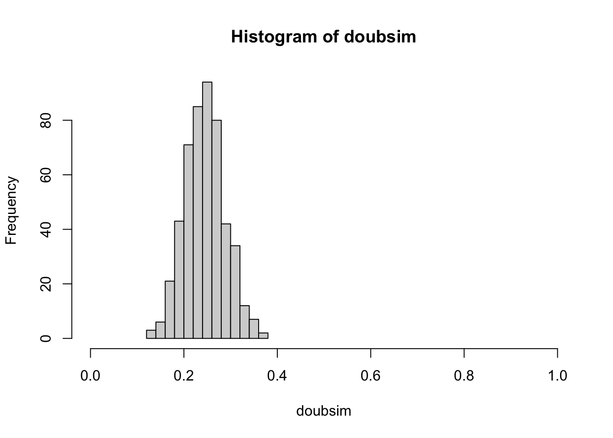

S1_probability: Definitions and exercises
Vincent J. Carey, stvjc at channing.harvard.edu
May 19, 2022
Source:vignettes/S1_probability.Rmd
S1_probability.RmdOverview
Our concept of probability is that of “long run relative frequency”.
We’ll work with several models of random events to make this more concrete.
The probability of a 0-1 (binary or dichotomous) event
Simulating shuffled playing cards
Random permutations with sample()
We’ll take for granted that sample(x, size=length(x), replace=FALSE) in R
achieves a goal of “shuffling” elements of x. Thus we assume that,
if x is a vector in R, and
s1 = sample(x, size=length(x), replace=FALSE)
s2 = sample(x, size=length(x), replace=FALSE)then no aspect of the ordering of elements in
s1 can be used to predict anything about the ordering of elements of s2.
In other words, sample(x, size, replace=FALSE) is taken as a primitive operation
that permutes the elements of x in a “random” way.
set.seed(5432) # initialize, for reproducibility, the random number generator
sample(1:5, replace=FALSE) # permute (1,2,3,4,5)## [1] 4 2 1 3 5
sample(1:5, replace=FALSE) # a new, unpredictable, permutation## [1] 3 4 1 2 5Card deck definitions and operations
Our card deck is a vector with 52 elements. Unicode characters encode the “suits”.
library(CSHstats)
d = build_deck()
d## [1] "2 ♡" "3 ♡" "4 ♡" "5 ♡" "6 ♡" "7 ♡" "8 ♡" "9 ♡" "10 ♡" "J ♡"
## [11] "Q ♡" "K ♡" "A ♡" "2 ♢" "3 ♢" "4 ♢" "5 ♢" "6 ♢" "7 ♢" "8 ♢"
## [21] "9 ♢" "10 ♢" "J ♢" "Q ♢" "K ♢" "A ♢" "2 ♣" "3 ♣" "4 ♣" "5 ♣"
## [31] "6 ♣" "7 ♣" "8 ♣" "9 ♣" "10 ♣" "J ♣" "Q ♣" "K ♣" "A ♣" "2 ♤"
## [41] "3 ♤" "4 ♤" "5 ♤" "6 ♤" "7 ♤" "8 ♤" "9 ♤" "10 ♤" "J ♤" "Q ♤"
## [51] "K ♤" "A ♤"## [1] "♡" "♢" "♣" "♤"## [1] "2" "3" "4" "5" "6" "7" "8" "9" "10" "J" "Q" "K" "A"##
## 10 2 3 4 5 6 7 8 9 A J K Q
## ♡ 1 1 1 1 1 1 1 1 1 1 1 1 1
## ♢ 1 1 1 1 1 1 1 1 1 1 1 1 1
## ♣ 1 1 1 1 1 1 1 1 1 1 1 1 1
## ♤ 1 1 1 1 1 1 1 1 1 1 1 1 1A fair deck has one card for each combination of “face” and “suit”.
Shuffling the deck
A reproducible shuffling event can be programmed as follows:
set.seed(1234) # any numeric seed will do but you need to record it
shuffle_deck = function(d) sample(d, size=length(d), replace=FALSE)
head(d) # top 6 cards## [1] "2 ♡" "3 ♡" "4 ♡" "5 ♡" "6 ♡" "7 ♡"
head(shuffle_deck(d))## [1] "3 ♣" "4 ♢" "10 ♢" "Q ♣" "6 ♤" "9 ♤"Estimating the probability of an event
A simulation process: repeated shuffles and draws
Here’s a simple way of estimating the probability, construed as long run frequency.
We’ll simulate 100 shuffles and save the results of testing the suit of the top card.
heart_sign = function() "\U2661" # unicode U2661, prepend backslash
heart_sign()## [1] "♡"
res = rep(NA, 100)
for (i in 1:100) {
res[i] = (suits(top_draw(d)) == heart_sign()) # TRUE if top card is a heart
}
head(res)## [1] FALSE FALSE FALSE FALSE FALSE FALSE## [1] 0.26A more concise approach with R is:
## [1] 0.29Replicating the estimation process
Let’s intensify our investigation with an aim of understanding the uncertainty of estimation.
We’ll define a variable that gives the size of our “experiment”: we are shuffling
100 times and we’ll refer to this as the sample size, SSIZE
SSIZE = 100We will study the estimation procedure by replicating the experiment N_REPLICATION times.
N_REPLICATION = 500
set.seed(10101) # initialize, for reproducibility, the random number generator
doubsim = replicate(N_REPLICATION,
mean(replicate( SSIZE, suits(top_draw(d)) == heart_sign()) )
)
Exercises
8: How can we make the estimate of the probability of the event “suit of top card is ‘heart’” more precise?
Answer: increase SSIZE.
SSIZE = 500
set.seed(101012)
doubsim2 = replicate(N_REPLICATION,
mean(replicate( SSIZE, suits(top_draw(d)) == heart_sign()) )
)
With an increased “sample size”, we have reduced variation in our experiment-to-experiment estimates of the probability of heart as suit of top card.
Formal probability models
Intuitively, the probability of drawing a heart from a well-shuffled fair deck is 1/4. If we repeat the shuffling and drawing one hundred times, we expect around 25 draws to reveal a heart.
Formal probability models enable us to reason systematically about what we mean by around in our description of our expectation. With these models we can also create accurate predictions of likely outcomes in more complex events.
Using the binomial probability model
A series of independent dichotomous events (true or false, zero or one, heart or non-heart) can be modeled using a probability mass function for the binomial distribution. There are two parameters, \(p\) and \(n\), where \(p\) is the (unobservable) probability of the event (say “suit of top card is ‘heart’”) and \(n\) is the number of independent trials in which the random dichotomy is observed. In \(n\) “trials”, if the event has probability \(p\), the probability of seeing the event \(x\) times is \[ Pr(X = x; n, p) = {\binom{n}{x}} p^x(1-p)^{n-x} \] where have written \(X\) to denote the random quantity and \(x\) to denote its realization.
So for a single draw, with \(X\) the count of hearts seen in the draw, we have \[ Pr(X=0; 1, 1/4) = 1-1/4 = 3/4 \] \[ Pr(X=1; 1, 1/4) = 1/4 \]

Visualizing the model and the data
The formula given above tells us how frequently we will observe a given count. The
R function dbinom can compute the probability, which we multiply by the number
of realizations to get the height of the histogram.
hist(doubsim3, xlim=c(.15*500,.35*500),
xlab="count of draws with heart as suit of top card", ylim=c(0,115))
points(80:160, 2500*dbinom(80:160, 500, 13/52), pch=19, cex=.5)
legend(78, 110, pch=19, legend="scaled dbinom(x, 500, .25)", bty="n", cex=.85)Notice that the histogram, by virtue of its binning of the counts, does not seem to reflect the shape of the theoretical frequency function given by the dots. This can be remedied by increasing the number of replicates used.
There is considerable research regarding the design of histogram displays.
See ?nclass.Sturges for references. One unpleasant feature of the
display for doubsim2 is that it seems to imply an asymmetric distribution.
Another is the way it “cuts off” at the extremes.
A biased deck
Recall the layout of the fair deck:
##
## 10 2 3 4 5 6 7 8 9 A J K Q
## ♡ 1 1 1 1 1 1 1 1 1 1 1 1 1
## ♢ 1 1 1 1 1 1 1 1 1 1 1 1 1
## ♣ 1 1 1 1 1 1 1 1 1 1 1 1 1
## ♤ 1 1 1 1 1 1 1 1 1 1 1 1 1We will make a copy of one card and remove one:
##
## 10 2 3 4 5 6 7 8 9 A J K Q
## ♡ 1 1 1 2 1 1 1 1 1 1 1 1 1
## ♢ 1 1 1 1 1 0 1 1 1 1 1 1 1
## ♣ 1 1 1 1 1 1 1 1 1 1 1 1 1
## ♤ 1 1 1 1 1 1 1 1 1 1 1 1 1Probability models for categorical outcomes
Thus far we have focused on the dichotomy: top draw is heart or not. We can consider all the possible suits as a 4-valued response.
A contingency table
Let’s simulate the process of drawing the top card after shuffling, and tabulate the suits observed.
##
## ♡ ♢ ♣ ♤
## 148 106 126 120Multinomial model and simulation
We adopted the binomial model for the number of top draws with suit “heart” in a fixed number of shuffles:
\[ Pr(X = x; n, p) = {\binom{n}{x}} p^x(1-p)^{n-x} \]
With the fair deck, we have \(p= 1/4\). A generalization to a vector of responses is the multinomial model. We can use this for the (ordered) vector of counts of top draws yielding different suits. For this problem we have parameters \(N\) (number of trials), \(k\) (number of categories), and \(p_1, \ldots, p_k\), the category-specific probabilities. The realizations are denoted \(x_1, \ldots, x_k\) and we have \(\sum_i x_i = N\).
Now the probability model is defined in terms of random vectors and vectors of probabilities:
\[ Pr(X_1 = x_1, \ldots, X_k = x_k) = \frac{n!}{x_1! \cdots x_k!} p_1^{x_1} \cdots p_k^{x_k} \]
This provides a more elegant way of producing frequency distributions of the suit of the top draw.
NREP = 10000
SSIZE = 500
mnmat = rmultinom(NREP, SSIZE, rep(.25,4))
rownames(mnmat) = c("\U2661", "\U2662", "\U2663", "\U2664")
mnmat[,1] # one draw## ♡ ♢ ♣ ♤
## 131 125 110 134
apply(mnmat,1,mean)## ♡ ♢ ♣ ♤
## 124.9621 124.9080 125.0362 125.0937Notice that we did not really use the deck d in producing this matrix
of counts. Previously we applied sample() to the 52-vector of
cards. Now we use the model to develop the data
of interest.
Exercise
14: Modify the call to rmultinom to obtain distributions of
top card suits for the biased deck bd.
Hint: Change the part of the call involving rep().